University of St Andrews Library Project
The Study Space Finder project seeks to assist the Library Services department of the University of St Andrews in their mission to support the academic endeavors of the University’s students and staff. As the student population at the University grows, Library Services are actively engaged in discovering new ways to serve the needs of the increasing number of library patrons. Though the library has provided solutions to accommodate the increased demand in the form of improved facilities and additional study space, communicating those solutions to their patrons has been a challenge. To that end, the Study Space Finder project and its resulting prototypes are intended to help Library Services communicate the many options available to their patrons as they search for suitable places to pursue their academic endeavors.
Goal
The main goals were developed utilising our sketching ideation process and contextual inquiry to develop key aspects to focus our overall process on:
- Help students locate the best available study space for their current needs
- Allow students to save information for later access
- Function on a variety of devices
- Provide guidance quickly and easily
- Allow easy, low cost modification and maintenance
The resulting tool is designed to facilitate locating study space that best suits students’ individual needs and reduces the pressure on the main library.
Contextual Inquiry
The process for deriving the final prototypes began with an extensive contextual inquiry. We initiated the inquiry by meeting with our clients from Library Services, with whom we discussed the University’s needs and defined the scope of the project. We then conducted interviews and observations of students currently matriculated at the University of St Andrews to better understand how they find places to study and which aspects of a study space they most value. The information from the meeting, interviews and observations was distilled into 305 work activity notes. Analysis of these notes allowed us to build models of the students’ behaviour, needs and desires. These models, including a Work Activity Affinity diagram, a Flow Model, and two Hierarchical Task Models, became vital guides in our production of user requirements and the resulting sketches and prototypes.
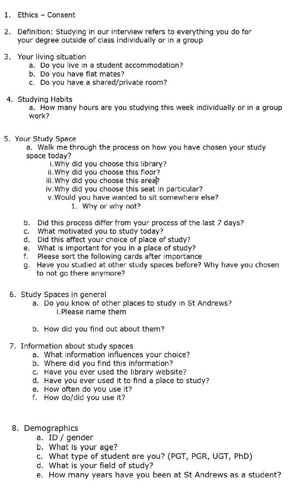User Requirements
Our contextual inquiry process led to the development of fifteen key user requirements. Each requirement was derived from the work activity notes that were used to construct the Work Activity Affinity Diagram; every user requirement is linked to the relevant work activity notes from which it was derived. By maintaining the path from the stated or observed needs of the participating students to the features and functionality described in the user requirements, we are able to assure that the issues we identified during the contextual inquiry are addressed in the resulting product.
 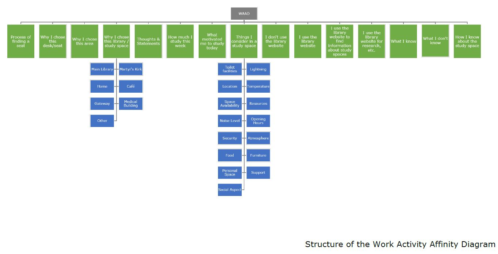
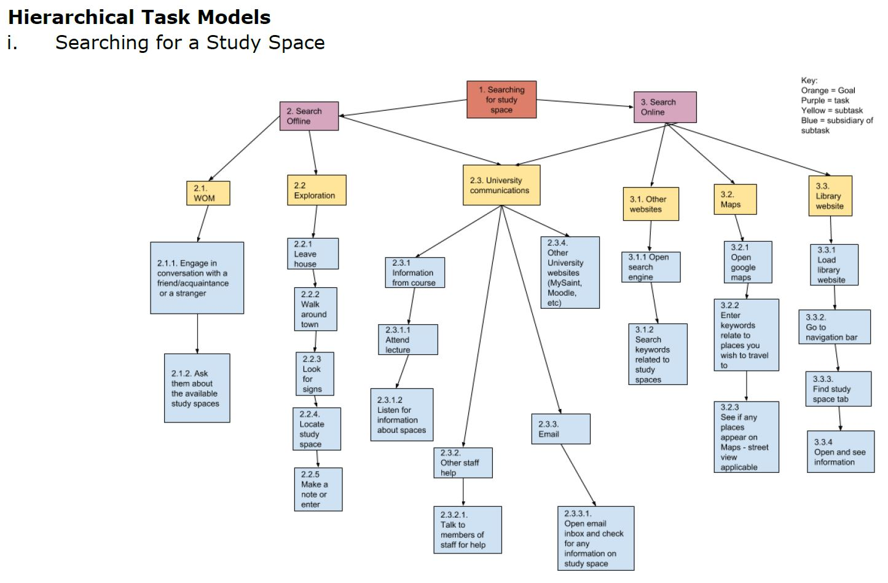
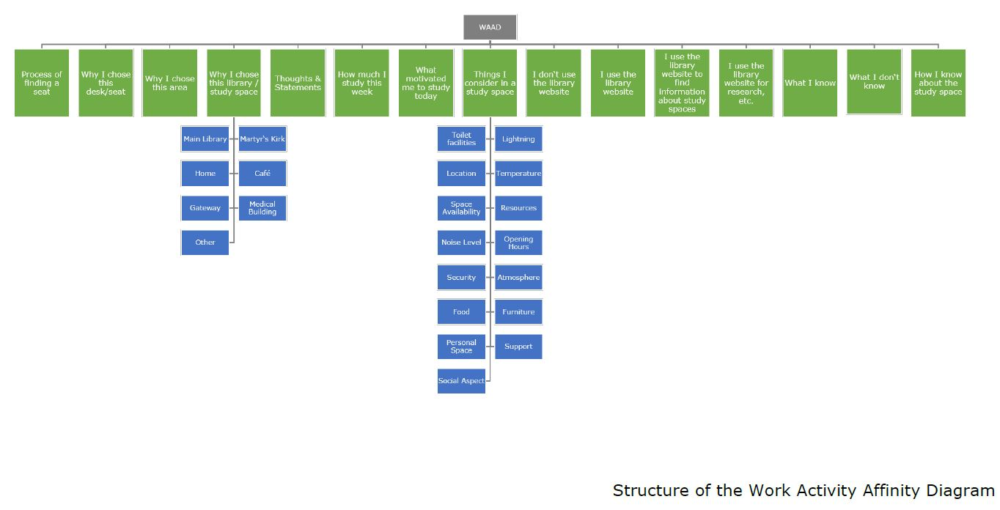
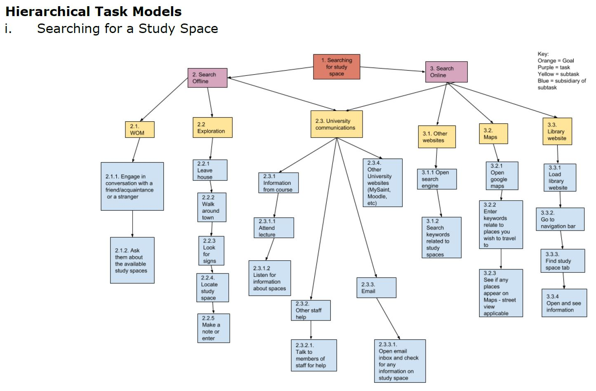
Sketches
Our goal in creating sketches was not to define a solution, but to probe the problems students face when finding study spaces and to explore a broad tableau of possible answers.
To this end, a substantial number of sketches were produced with one of two goals in mind: defining the problem or investigating solutions. These sketches illustrate a problem that was used to explore the difficulties in finding accurate information about available study spaces in the Main Library. By producing a variety of sketches, we were able to discuss the issues and visualize potential solutions with agility and minimal overhead. These sketches and the ideas they captured were used in the subsequent phases of prototyping and in discussions with the client.
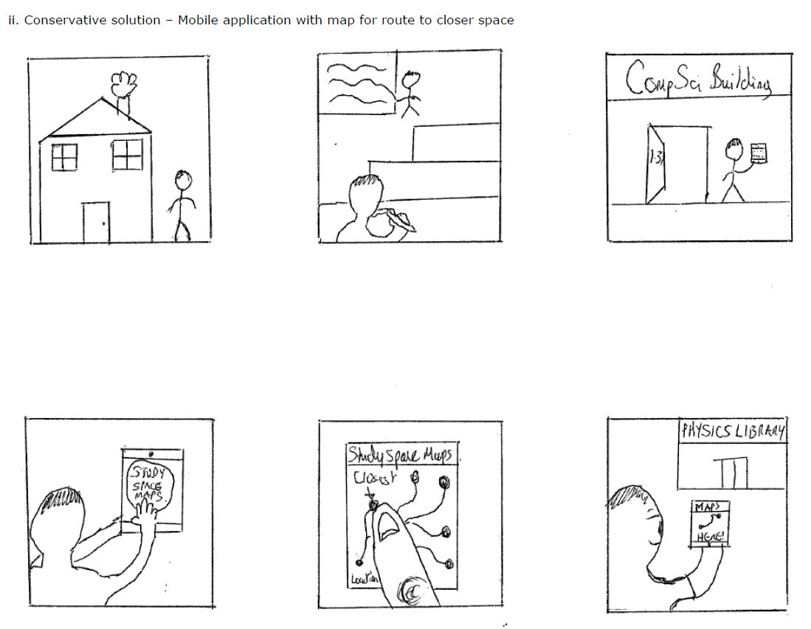Lo-Fidelity prototypes
As a team, we developed several prototypes at varying levels of fidelity. The initial prototypes consisted of sketches, which were chosen for their ease of creation and open, collaborative nature. These prototypes were created as a group and everyone participated by drawing ideas and discussing their merits. These low-fidelity prototypes differed in nature from the sketches as they began the actual design process for the product that would be delivered to the client.
Having discussed the initial designs of the prototype, the team next developed paper prototypes to represent various possible screens and user journeys. Again, the choice of lower fidelity prototypes allowed us to easily change the designs and rapidly produce possible solutions. Though sketched in a similar fashion to the whiteboard prototypes, the paper prototypes allowed us to capture finer details and visualize the product in a form factor similar to that of a mobile phone screen. These prototypes also helped us permanently record ideas that could later be referenced as we developed our high-fidelity final prototype.
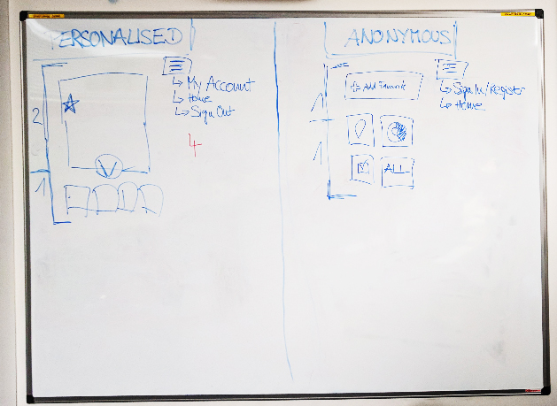 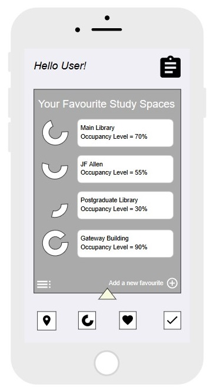Final high-fidelity prototypes
After exploring ideas and options through our low-fidelity prototypes, we determined that we had accumulated enough information to invest time in carefully-crafted, high-fidelity prototypes. These prototypes were created using the online prototyping tool Moqups. The choice to create high fidelity prototypes was motivated by the desire to define not only the look and feel of the product, but also the user’s experience as they interact with the tool. Therefore, the choice to create mock-ups using the Moqups tool was motivated by several factors. First, the tool allowed the creation of prototypes using simple drag and drop tools, which reduced the time required to learn and use the product. Second, it also facilitated collaborative work, as all the team members could work on the prototypes simultaneously and from different locations. Third, it allowed us to not only design the product’s screens, but also a simulated experience of what might happen as a user interacts with the product. Finally, and perhaps most importantly, Moqups allowed us to easily communicate within the team. The tool enabled us to discuss questions and ideas by providing a commenting feature that allowed us to flag specific screens or elements and insert comments directly into the prototype. By taking advantage of this mechanism we could continue to discuss the development of the prototype as a group between our regular meetings and calls.
We developed two final prototypes that will be provided to the client. One prototype is a mobile-first system that fulfils the user requirements in a clean, simple to use format. The next prototype is an extension of the mobile-first prototype, but with an experience better suited to large screen displays, such as what might be encountered on a tablet or computer
Mobile based prototype
This prototype is based on a mobile-first web application. Static images of this—and subsequent—prototypes have been included above, but a fully-functional interactive prototype is also available here. The goal is to provide the most relevant information to users with the minimum amount of effort required. We hope to help users locate the best study space for their needs quickly, so they can focus their efforts on studying and not on using the product.
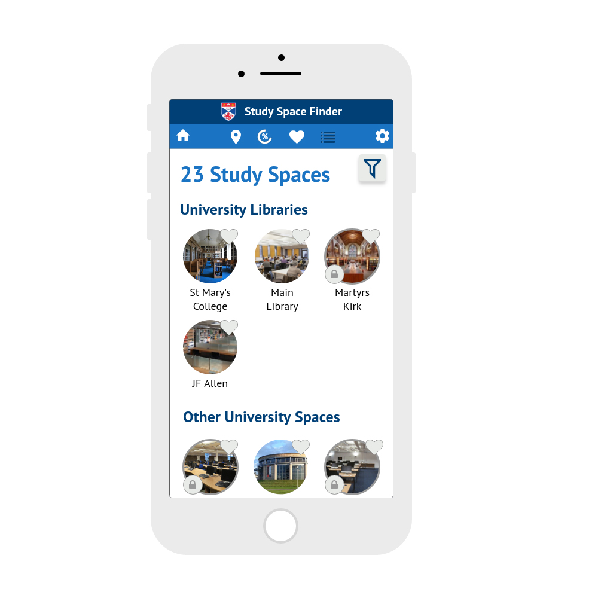 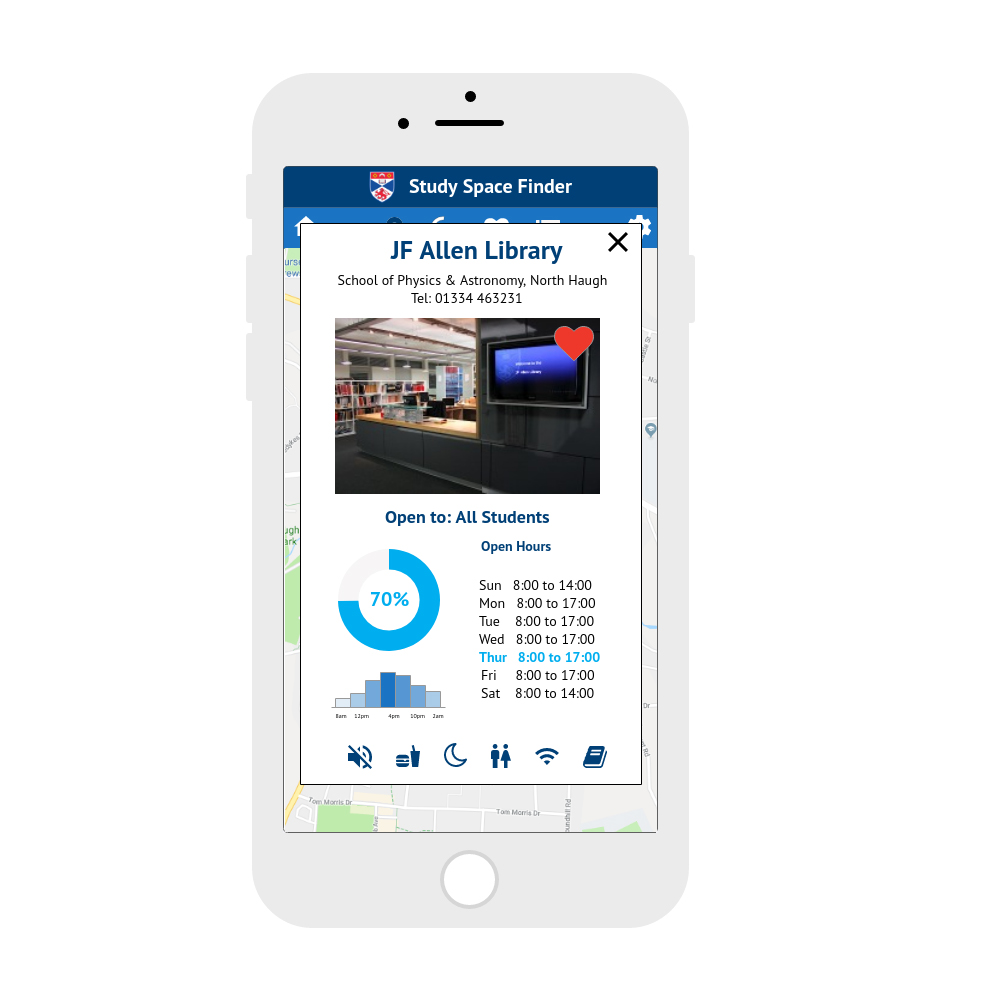Web based prototype
The experience for users with large screen devices, such as computers and tablets, will closely mirror that of the mobile experience, but with a few notable exceptions.
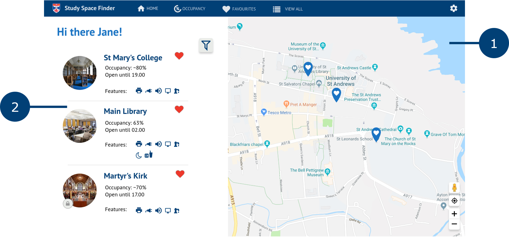Evaluation
The very first decision was to develop a web-based tool rather than a mobile application. While a mobile application would benefit from the widespread availability of smartphones, it would exclude the possibility to check information on laptops and other desktop experiences, which, we found out during our contextual inquiry, was almost as dominant as the mobile usage. We decided therefore to focus on a mobile-first website, that was as comfortable to use on a phone as on a desktop and to prototype both experiences.
Regarding the design, we iteratively reviewed our choice in colours and changed them multiple times throughout the prototyping process. Feedback from our client for instance made us change the colours of the map icons, as it was not clear which of the icons was the user’s location. We change this and differentiated the icons to demonstrate more clearly what was the user and what were the spaces. We initially chose yellow, green and others to reflect occupancy levels, which however was not intuitively understood. We therefore decided against this alternative in favour of a more uniform theme, keeping the colours of the tool and of the St Andrews branding.
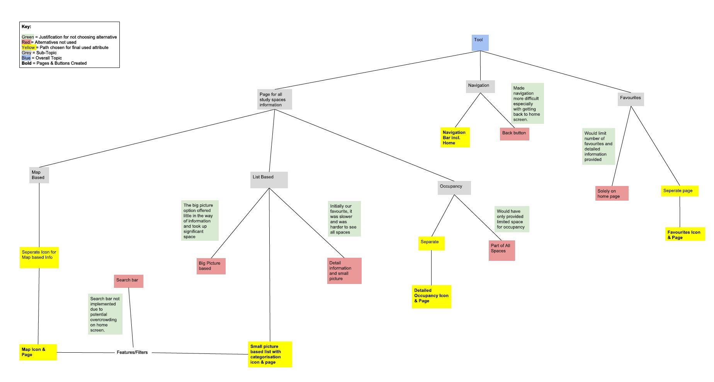Conclusion
In summary, our work meets the client’s initial requirements derived from the concept statement. Our solutions will improve the ability for students to find study spaces. The tool accomplishes this by advertising all spaces available, allowing users to find alternatives that will hopefully lower traffic to the main libraries.
Our work shows an ideation process and design thinking as well as multiple prototyping steps, which all contribute to this high-fidelity prototype, encompassing a wide range of features. If implemented this tool has the potential to improve the study space finding experience for students.